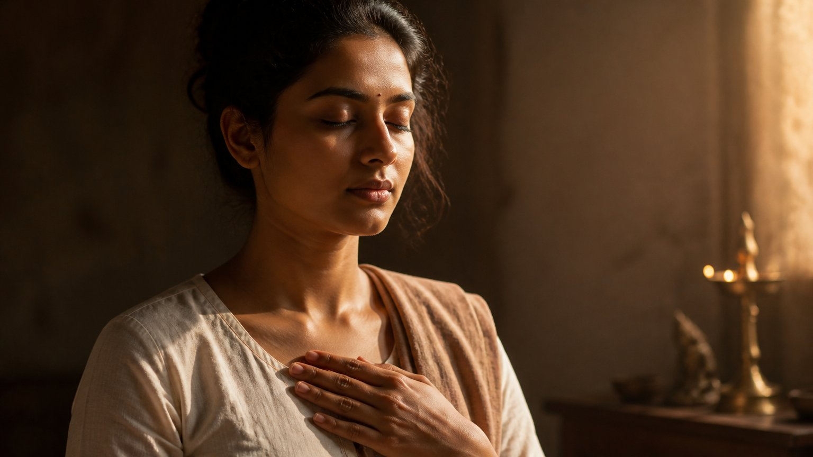

बहुत से लोग मानते हैं कि जीवन भर कुछ भी करो, बस अंतिम क्षण में भगवान का नाम ले लो, तो मोक्ष मिल जाएगा। पर क्या सचमुच ऐसा है?
आचार्य उपेंद्र जी इस प्रवचन में भगवद्गीता के आठवें अध्याय को पढ़कर दिखाते हैं कि मृत्यु के समय वास्तव में क्या करना है, और क्यों वह तैयारी जीवन भर की होती है, अंतिम क्षण की नहीं।
मृत्यु के समय क्या करना है?
गीता में भगवान उस परम पद की बात करते हैं, जिसे वेद जानने वाले अविनाशी कहते हैं:
यदक्षरं वेदविदो वदन्ति विशन्ति यद्यतयो वीतरागाः।
यदिच्छन्तो ब्रह्मचर्यं चरन्ति तत्ते पदं सङ्ग्रहेण प्रवक्ष्ये॥
(श्रीमद्भगवद्गीता ८.११)
यह परम पद ही ओंकार की स्थिति है। आसक्ति से रहित संन्यासी इसी में प्रवेश करते हैं, और इसी को पाने के लिए ब्रह्मचारी ब्रह्मचर्य का पालन करते हैं।
गीता में यह संक्षेप में कहा गया है। आचार्य जी इसे विस्तार से सिखाते हैं।
पहला चरण: इंद्रियों के द्वार बंद करना
सर्वद्वाराणि संयम्य मनो हृदि निरुध्य च।
मूर्ध्न्याधायात्मनः प्राणमास्थितो योगधारणाम्॥
(श्रीमद्भगवद्गीता ८.१२)
सर्वद्वाराणि संयम्य का अर्थ है सारी इंद्रियों (senses) के काम रोक देना। खाने की इच्छा है, तो अभी नहीं खाना। नाक को अभी कुछ नहीं सूंघना, कानों को कुछ नहीं सुनना, आंखों को कुछ नहीं देखना।
दूसरा चरण: मन को हृदय में स्थिर करना
मन को हृदय में स्थिर करने का अर्थ है निःस्वार्थ भाव। "मुझे यह चाहिए, मुझे लाभ चाहिए", इस कारण से साधना नहीं करनी है।
यह भगवान के प्रति बिना शर्त के प्रेम (unconditional love) की अवस्था है।
क्या आपकी साधना किसी लाभ की इच्छा से जुड़ी है, या केवल प्रेम से?

तीसरा चरण: प्राण को तीसरे नेत्र पर ले जाना
फिर उस जीते हुए मन के द्वारा प्राण (life force energy) को मस्तक में, अर्थात तीसरे नेत्र पर स्थापित करना है।
यह गुरु तत्व से मिलन है। गुरु का स्मरण करते हुए पूरी जीवनी शक्ति को तीसरे नेत्र पर एकत्रित करना और परमात्मा संबंधी योगधारणा में स्थित होना।
ॐ: अक्षर ब्रह्म, और उसके पीछे का अर्थ
ओमित्येकाक्षरं ब्रह्म व्याहरन्मामनुस्मरन्।
यः प्रयाति त्यजन्देहं स याति परमां गतिम्॥
(श्रीमद्भगवद्गीता ८.१३)
यहां करने वाले को "पुरुष" कहा गया है। आचार्य जी कहते हैं, पुरुष अर्थात तुम ही स्वयं परमेश्वर।
ॐ को अक्षर ब्रह्म कहा गया है, अर्थात एक अक्षर के रूप में ब्रह्म। इसी प्रकार ध्वनि के रूप में वह शब्द ब्रह्म है।
परंतु श्लोक केवल उच्चारण की बात नहीं करता। वह कहता है: उच्चारण करते हुए उसके अर्थस्वरूप निर्गुण ब्रह्म का चिंतन करना है।
निर्गुण ब्रह्म ही मूल है। अक्षर रूप ब्रह्म तो उसका वाचक है, उसका नाम है।
यहां शंका उठती है कि जो निर्गुण को जानता ही नहीं, समझता ही नहीं, उसके लिए यह अक्षर ॐ बोलने का कोई फायदा नहीं।
वह छोटा सा "च" जिसे सब भूल जाते हैं
अन्तकाले च मामेव स्मरन्मुक्त्वा कलेवरम्।
यः प्रयाति स मद्भावं याति नास्त्यत्र संशयः॥
(श्रीमद्भगवद्गीता ८.५)
इस श्लोक में एक छोटा सा शब्द है: "च", अर्थात "और"। अन्तकाले च का अर्थ है "अंतकाल में भी"।
लोगों को लगता है कि केवल अंत में ॐ बोलना है। पर केवल अंत में ॐ बोलने से मोक्ष नहीं होता। आदि शंकराचार्य जी ने इस एक "च" पर अपनी टीका में गहरा विश्लेषण किया है।
"भी" का अर्थ है कि पहले के समय में भी वही चल रहा था। आचार्य जी स्पष्ट कहते हैं कि जो पहले गर्लफ्रेंड का स्मरण करता रहे और अंत में ॐ बोले, उसे मोक्ष नहीं मिलेगा।
समस्या: अंतिम क्षण की सूचना नहीं मिलती
जन्म से नौ महीने पहले सूचना मिल जाती है। पर मृत्यु से नौ सेकंड पहले भी कोई सूचना नहीं मिलती।
इसलिए अंतिम क्षण का हिसाब लगाकर ॐ बोलना संभव नहीं। उपाय एक ही है: हर क्षण को अंतिम क्षण समझकर साधना करना।
जैसा भाव, वैसी गति
यं यं वापि स्मरन्भावं त्यजत्यन्ते कलेवरम्।
तं तमेवैति कौन्तेय सदा तद्भावभावितः॥
(श्रीमद्भगवद्गीता ८.६)
अंतकाल में मनुष्य जिस भाव का स्मरण करता है, उसी को प्राप्त होता है, क्योंकि वह सदा उसी भाव में रहा है।
आचार्य जी के उदाहरण सीधे हैं। जो गहन चिकित्सा कक्ष में भी गुलाब जामुन और समोसे के बारे में सोचता रहा, वह अगले जन्म में हलवाई की दुकान के बाहर भिखारी बन सकता है, या किसी अमीर घर में पेटू बनकर आ सकता है।
जिसके मन में अंत तक कामवासना रही, उसका जन्म पशु योनि में भी हो सकता है। और जिसने अंत में "गुरु, गुरु" किया, उसका जन्म एक बार फिर गुरु के पास होगा।
अंत में वही याद आता है जो जीवन का सार था
अंतिम क्षण में वही याद आता है जो पूरे जीवन का सार था। यदि जीवन भर "बेटा, बेटा", "पैसा, पैसा" और चिंता रही, तो अंत में ॐ याद ही नहीं आएगा।
गुरु, सत्संग सब कुछ किया हो, फिर भी जो प्रधान विचार रहा, मृत्यु से पहले वही आएगा।
आज यदि आपका अंतिम दिन हो, तो आपके मन में सबसे पहले कौन सा विचार आएगा?
हर समय स्मरण, और युद्ध भी
तस्मात्सर्वेषु कालेषु मामनुस्मर युध्य च।
मय्यर्पितमनोबुद्धिर्मामेवैष्यस्यसंशयम्॥
(श्रीमद्भगवद्गीता ८.७)
भगवान कर्म छोड़ने को नहीं कहते। सर्वेषु कालेषु, हर समय मेरा स्मरण कर, और युद्ध भी कर।
आचार्य जी इसे रोज़ के जीवन से जोड़ते हैं। सफेद बालों से लड़ाई है, तो रंग लगाते समय भी ॐ बोलो, और यह समझते हुए बोलो कि यह सब अस्थायी है। रोग है, तो वह शरीर के साथ एक अस्थायी युद्ध है।
अभ्यास अंतिम क्षण में नहीं होता
अभ्यासयोगयुक्तेन चेतसा नान्यगामिना।
परमं पुरुषं दिव्यं याति पार्थानुचिन्तयन्॥
(श्रीमद्भगवद्गीता ८.८)
अभ्यासयोग (the yoga of practice) से युक्त, दूसरी ओर न भटकने वाले चित्त से निरंतर चिंतन करने वाला ही परम दिव्य पुरुष को प्राप्त होता है।
अभ्यास अंतिम क्षण में नहीं होता। वह जीवन भर का होता है।
अंत मति सो गति
आचार्य जी कहते हैं कि पूरे जीवन की जो गति आपने बना रखी होगी, वही अंत में मति होगी।
"अंत मति सो गति" सही है। पर अंत में मति कैसी होगी, यह पूरा जीवन तय करता है।
इसलिए पहले जीवन में ॐ को समझना है, और अक्षर ब्रह्म और शब्द ब्रह्म के अनुसार समझते हुए उसका उच्चारण करना है। जिसने उस ॐ को वास्तव में सुना और समझा है, उनसे दीक्षा लेनी होगी, और धीरे-धीरे उन्हीं से उसका अर्थ समझना होगा।
मुख्य बातें
- मृत्यु के समय की विधि गीता (८.१२-१३) में है: इंद्रियों को रोकना, मन को निःस्वार्थ प्रेम से हृदय में स्थिर करना, और गुरु का स्मरण करते हुए प्राण को तीसरे नेत्र पर ले जाना।
- ॐ अक्षर ब्रह्म है, पर उसका अर्थ निर्गुण ब्रह्म है। अर्थ को समझे बिना केवल उच्चारण से लाभ नहीं।
- "अन्तकाले च" का "च" बताता है कि स्मरण पूरे जीवन का होना चाहिए, केवल अंत का नहीं।
- मृत्यु की कोई सूचना नहीं मिलती, इसलिए हर क्षण को अंतिम क्षण समझकर साधना करनी है।
- अंत में वही याद आता है जो जीवन का प्रधान विचार था, और उसी के अनुसार अगला जन्म होता है।
- कर्म छोड़ना नहीं है: हर समय स्मरण करते हुए अपना युद्ध भी लड़ना है।
- ॐ का सही अर्थ समझने के लिए उस गुरु से दीक्षा आवश्यक है जिसने ॐ को वास्तव में जाना है।